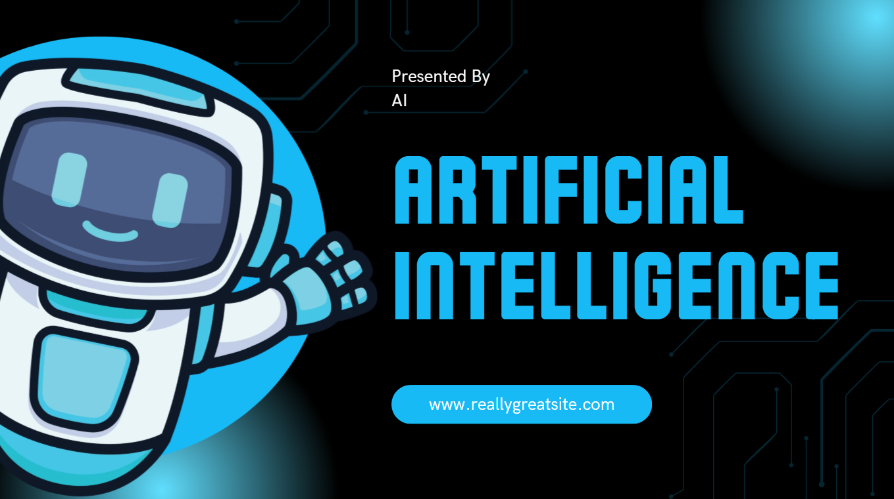

Cuaderno #5
¿Deberíamos fingir que la IA no existe?
1 de septiembre de 2026
Esto no es un encuentro con un libro, sino una reflexión que surgió a raíz de un comentario sobre esta página web. Por eso os la propongo aquí como un pequeño “detrás de las cámaras”.
El tema es el uso de la Inteligencia Artificial.
Entonces, ¿qué se supone exactamente que debemos hacer? ¿Fingir que la IA no existe? 😄
No quiero que la IA escriba libros o haga películas, aunque los mundos de fantasía se vean mucho más realistas con el CGI moderno: me gustan las historias que nacen de la mente humana.
No quiero que la IA haga música: prefiero la fascinante capacidad de las manos humanas de dominar un instrumento complejo.
No quiero que la IA haga arte o ilustraciones: prefiero la creatividad humana.
Y, sin embargo, uso IA. Mucho.
La uso para ayudarme a depurar código, corregir una frase cuando no estoy segura, encontrar información y referencias, analizar datos, identificar esquemas. Y a veces la uso para ilustrar algo que tengo en mente, porque puedo ser buena en algunas cosas, pero cuando se trata de dibujar, soy un desastre.
Y esto me ha valido alguna crítica recientemente.
«Tsk, tsk», comentó alguien debajo de una de mis publicaciones. «Has usado IA para una imagen. ¿No sabes que estás ROBANDO a artistas e ilustradores? Y además, la imagen es horrible».
Esto último, por supuesto, es discutible. 😄
Pero lo que me pareció interesante es que el post no hablaba de la imagen. Hablaba de mi página web, mis artículos, mis libros, el pequeño proyecto editorial personal que estoy construyendo. Nada de eso parecía importar. Lo que encendió su indignación fue la imagen generada con IA.
Expliqué que la imagen simplemente estaba ahí para ilustrar una idea.
«Tsk, tsk», fue la respuesta. «Deberías usar Canva. Es fácil».
Ah, bueno. ¿Lo es?
Ya probé Canva para algunos proyectos. Es intuitivo, sí. Pero no conseguí los resultados que tenía en mente.
Quizá no se me da muy bien Canva, o quizá no todas las herramientas sirven para todas las tareas, todas las personas y todas las situaciones.
Y aquí es donde la interacción me hizo pensar.
¿Qué se supone exactamente que debemos hacer con la IA?
Yo la uso como una herramienta.
Puedo escribir a mano, pero cuando escribo un artículo utilizo un teclado. Probablemente no sea tan bonito como la escritura cursiva a mano, pero estoy escribiendo un artículo, no presumiendo de mi caligrafía.
Del mismo modo, técnicamente podría cultivar parte de mis propios alimentos, pero voy al supermercado. Sí, las verduras pueden saber mejor cuando se recogen directamente del huerto. Pero yo sigo comprándolas en el supermercado.
La IA es una herramienta. Utilizarla no significa necesariamente ser perezoso: a veces simplemente significa elegir la herramienta que te ayuda a conseguir el resultado que buscas.
Por supuesto, la IA no es éticamente neutral. Hay cuestiones legítimas sobre los derechos de autor, los datos utilizados para entrenarla, la regulación, la transparencia, el coste medioambiental y la calidad. Por ejemplo, personalmente odio que para entrenar una IA se destruyan libros (hablé de ello en otro artículo: English version).
Esas discusiones importan.
Pero la persona que me confrontó tenía una posición mucho más sencilla: la IA «roba» a los artistas, por lo tanto yo debería usar Canva.
Así que me pregunto:
¿Utilizar IA es moralmente inaceptable? Y, si lo es, ¿dónde trazamos la línea? ¿Todas las IA son moralmente malas o solo algunas? ¿Depende de la tarea? ¿Es aceptable utilizar IA para programar, pero no para hacer imágenes porque los artistas son artistas y los programadores no? (Sí, por supuesto, es una pregunta provocadora).
Respeto a los artistas. Me encanta el arte, en el sentido más amplio de la palabra, incluyendo la escritura, el cine, la ilustración y la música.
Tampoco me gusta especialmente la idea de que la IA sustituya a la creatividad humana. A veces incluso me fastidia que la IA pueda hacer algo mejor o más rápido que yo.
Pero la IA existe.
Podemos regularla. Podemos criticarla. Podemos decidir en qué ámbitos no queremos utilizarla. Podemos exigir mejores reglas para las personas cuyo trabajo contribuye a estos sistemas.
Pero fingir que no existe, o esperar que la gente simplemente no la utilice… ¿en serio? El ludismo no es una estrategia para afrontar el cambio tecnológico.
Entonces, ¿qué se supone que debemos hacer?
La imagen que ilustra este artículo es una plantilla de Canva, para no cabrear a nadie. 😄
Las historias siguen viviendo cuando se comparten.
Si este texto os ha hecho pensar y queréis comentarlo, escribidme: info@casadonatalina.it